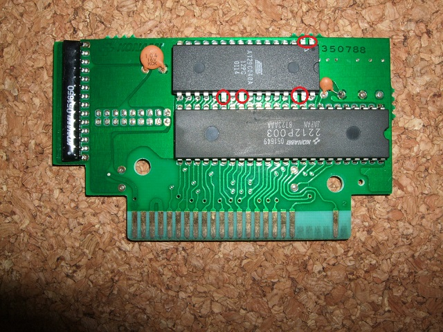

６．EEPRMの取り付け
いよいよはんだ付けです。
AM29F040の3〜30ピンが、1Mbit ROMのあった場所の1-28ピンに収まるようにとりつけます。
実際に基板の穴に入れてはんだ付けするのは、ここでは3-16, 17-21, 23, 25-29と32ピンだけです。写真の赤丸で示した1,2,22,24,30,31の6本は足を開いてあると思いますが、基板には接続しません。
写真では間違えてAT29C040を取り付けてしまっていますが、残念ながらソフトが対応しておらず使えません。

 次へ
次へ